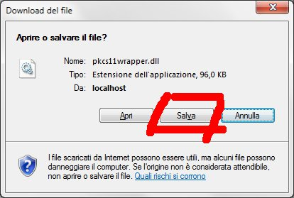
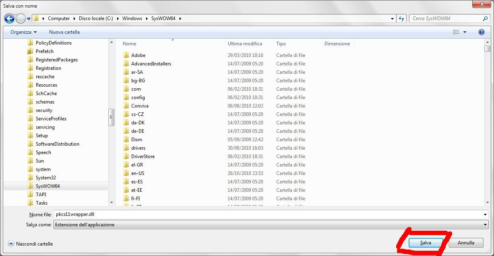
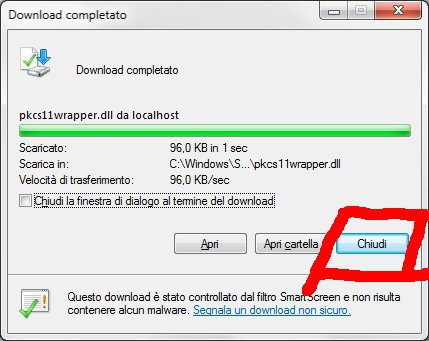

Prima di scaricare : se vuoi capire meglio cosa stai scaricando puoi leggere questo articolo
Cliccate sul link di download corrispondente al vostro sistema operativo
Si aprirà una finestra per il download del file :
Premete il bottone Salva, si aprirà un'altra finestra :
Se siete su un sistema windows a 32 bit, scegliete la cartella C:\Windows\System32, se siete su un sistema windows a 64 bit scegliete la cartella C:\Windows\SysWOW64.
ATTENZIONE!!
Gli utenti con windows a 64 bit potrebbero incappare in diversi problemi legati al tipo di java e di browser che stanno utilizzando (32 o 64 bit).
Tipicamente scaricare la versione a 32 bit ed inserirla sia nella cartella C:\Windows\System32 che nella cartella C:\Windows\SysWOW64 risolve tutti i problemi.
Se siete su un sistema linux, scegliete la cartella /usr/lib.
Se site su un sistema diverso, il file deve essere scaricato in una directory presente nel PATH di sistema.
Lasciate invariato il nome del file che scaricate.
Premete il bottone Salva ed attendete il download del file, al termine si aprirà un'altra finestra di notifica dell'avvenuto download; Premete il bottone Chiudi.
Premete nuovamente sul link Carica elenco certificati per ottenere la firma dei certificati caricati sulla smartcard.